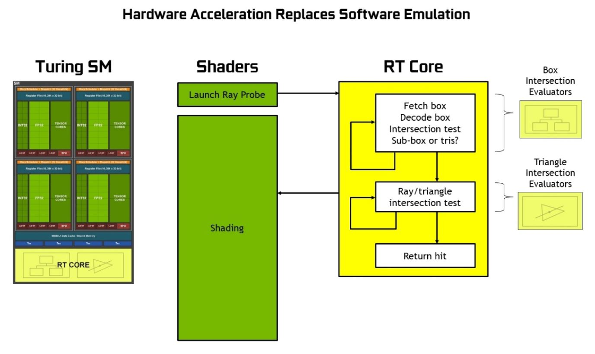
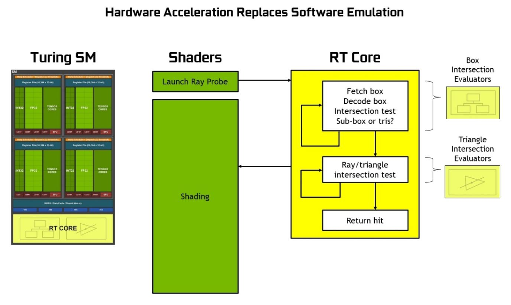

The software graphics pipeline workflow already demonstrates the vast amount of parallel operations that could be done within the graphics pipeline. The transformation of a single vertex is a multiply-accumulate operation between each entry of each row of a transformation matrix and each entry of the vertex position vector. For a single 3D object, each of the triangular faces that make up its surface would individually applied cross product to obtain its normal vector and dot product to calculate how illuminated it will be. Vertices's projection from the 3D model space to the 2D screen space is another chunk of heavy matrix multiplications. The interpolation and rasterization step also needs to worked on over as many faces as there are to make up the 3D object.
Additionally, we can see how this architecture would benefit from hardware multithreading. This added functionality would allow it to quickly switch between tasks while data is loaded, prepared, utilized, and stored. As a result, the throughput of the system could increase dramatically for the price of only additional register files and virtual memory.
Modern GPGPU Design
Though GPUs now utilize a variety of data flows, ranging from MIMD (Multiple Instructions, Multiple Data) to SISD (Single Instruction, Single Data), they were originally designed to speed up SIMD (Single Instruction, Multiple Data). It is quite easy to see how this data flow would benefit from enormous parallelism; the processor can take one instruction and perform the corresponding operation on thousands of bits of data, much as matrix multiplication is just performing one operation on many individual elements and vectors. As a result, we begin by designing a single SIMD unit. This unit takes our instruction and requests all of the necessary data from the register file in order to perform that instruction as quickly as possible on all of the data. This paradigm is especially useful for matrix multiplication as every entry of a resulting vector represents an independent data flow that can be operated on by the same instruction.
$1(x) + 0(y) + 0(z) + 1(x_t) = x+x_t$
$0(x) + 1(y) + 0(z) + 1(y_t) = y+y_t$
$0(x) + 0(y) + 1(z) + 1(z_t) = z+z_t$
$0(x) + 0(y) + 0(z) + 1(1) = 1$
As these equations illustrate, multiplication by a translation matrix can be broken up into four equations that execute the same arithmetic operations on four sets of independent data with four independent outputs.
By combining similar rays into packets, we can again take advantage of the parallelism existing within GPUs and specifically the SIMD architecture.
The SIMD structure also allows for the testing of four rays against each box and primitive simultaneously. This proves especially useful if we are testing multiple identical rays, perhaps to acheive greater accuracy and eliminate the need for denoising, although it also proves useful when testing with multiple rays that are similar but not identical as well. The rays will follow a more similar path through the ray tracing acceleration structure if they are more similar, increasing SIMD utilization from between 25% to 100% for a 4-wide SIMD structure. For reference, the new real-time ray tracing hardware available today must rely on a small number of rays per pixel in addition to image reconstruction and denoising to produce photorealistic images.
nVidia Turing Architecture
Hybrid Rendering
RT Cores
In addition to traditional fine grained multithreaded SIMD processors, nVidia's most recent Turing Architecture incorporate a hardware acceleration for performing ray tracing routines. nVidia calls each one of this type of special hardware module RT sore.
RT cores allows the traditionally software oriented BVH transversal and ray-triangle intersection test to become their own independent hardware process. While a SIMD shader would initiate the ray probe, that is, presumably figuring out the proper parametric equations for the light rays, the hardware would take the ray probe and recursively search through the bounding volume hierearchy until it reaches the primitive level to hand over the tasks for ray intersection hardware to determine a hit or no hit. The hit ultimately determined by the test would be returned to the shaders to proper shading. nVidia's Turing Architecture Whitepaper offers a good graphical comparison between Pascal Architecture (with no ray tracing hardware acceleration) and Turing Architecture(with ray tracing hardware acceleration). Shaders, as RT cores are in the middle of determining hits, is freed up to perform other tasks in parallel.
 

Performance, Energy, and Area
As shown by the comparison of Pascal and Turing Streaming Processor(SP) designs, the latter significantly differs in its addition of tensor cores(not discussed in this project) and RT cores. It would be interesting to conduct a comparison between the two architectures.
Below is a table refered in NVIDIA Turing GPU Architecture Whitepaper that compares some of the technical aspects between two of the top echolon gaming graphics cards.
| GPU Features | GeForce GTX 1080 | GeForce RTX 2080 |
|---|---|---|
| Architecture | Pascal | Turing |
| SMs | 20 | 46 |
| CUDA Cores per SM | 128 | 64 |
| CUDA Cores per GPU | 2560 | 2944 |
| RT Cores | N/A | 46 |
| GPU Base Clock MHz | 1607 | 1515 |
| RTX-OPS (Tera-OPS) | 8.9 | 60 |
| Ray-Cast (Giga Rays/sec) | 0.89 | 8 |
| Frame Buffer Memory Size and Type | 8192 MB GDDR5X | 8192 MB GDDR6 |
| Memory Clock (Data Rate) | 10 Gbps | 14 Gbps |
| Memory Bandwidth (GB/sec) | 320 | 448 |
| L2 Cache Size | 2048 KB | 4096 KB |
| Transistor Count | 7.2 Billion | 13.6 Billion |
| Die Size | 314 mm² | 545 mm² |
| Thermal Design Power | 180 W | 225 W |
| Manufacturing Process | 16 nm | 12 nm |
While there are fewer numbers of Streaming Multiprocessors(SM) in the Pascal Architecuture, each SM individually has more Streaming Processors(SP, CUDA core) than those in Turing. The decrease in the number of SP in Turing SMs processors reflects the incorporation of RT Core and Tensor Core into each SM. The different Turing architecutre is thus capable of casting almost nine times more rays than its Pascal counterpart could and perform almost six times more hybrid rendering operations(RTX-Ops). In the same time, however, we shouldn't ignore the advances in memory for the new generation of graphics cards: RTX 2080 uses GDDR6 at 14 Gbps versus GTX1080's GDDR5X at 10Gbps. RTX 2080 also has doubled the size of the its L2 cache compared to GTX1080
Not surprisingly, the higher performance also introduced higher energy comsumption. At their maximum, GTX 1080 would only produce 180W of power whereas RTX 2080 theoretically goes up to 225W, despite that the latter has a slightly lower base clock rate than the former. RTX 2080 nearly doubles the amount of transistors at 13.6 billions versus 7.2 billion transistors of GTX 1080. The fact that RTX 2080 upgraded its manufacturing process to 12nm to 16nm, but it didn't help the chip to be still nearly twice the size of that inside GTX 1080.